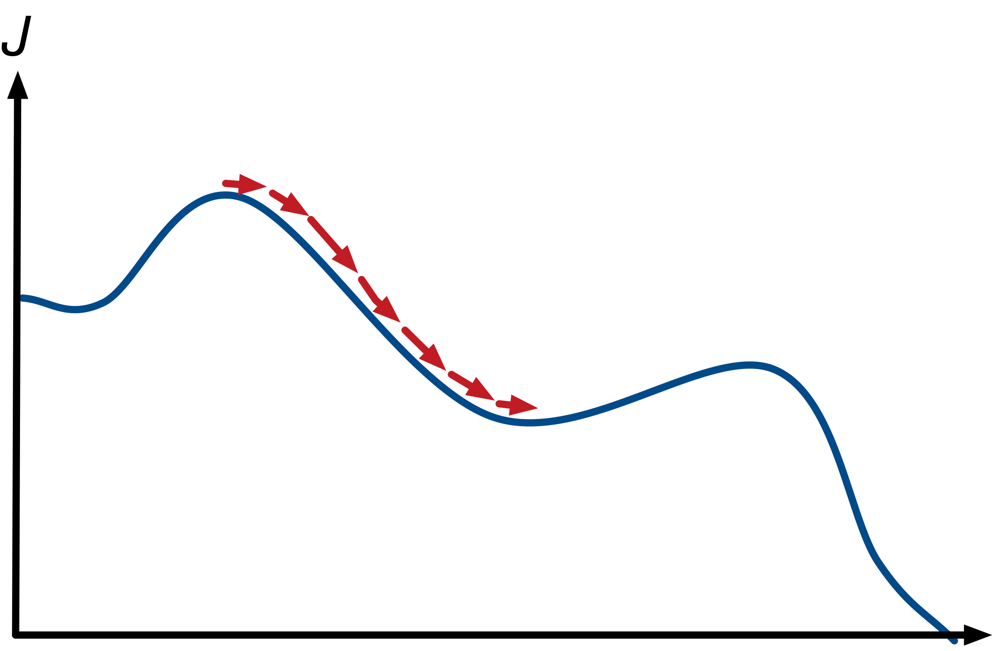
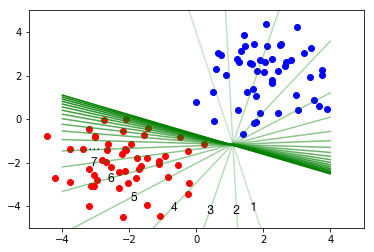
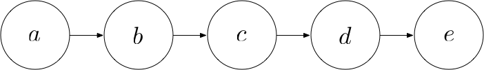
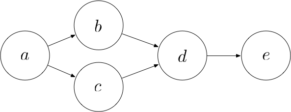

Deep Learning From Scratch IV: Gradient Descent and Backpropagation
This is part 4 of a series of tutorials, in which we develop the mathematical and algorithmic underpinnings of deep neural networks from scratch and implement our own neural network library in Python, mimicking the TensorFlow API. Start with the first part: I: Computational Graphs.
- Part I: Computational Graphs
- Part II: Perceptrons
- Part III: Training Criterion
- Part IV: Gradient Descent and Backpropagation
- Part V: Multi-Layer Perceptrons
- Part VI: TensorFlow
Gradient descent
Generally, if we want to find the minimum of a function, we set the derivative to zero and solve for the parameters. It turns out, however, that it is impossible to obtain a closed-form solution for $W$ and $b$. Instead, we iteratively search for a minimum using a method called gradient descent.
As a visual analogy, imagine yourself standing on a mountain and trying to find the way down. At every step, you walk into the steepest direction, since this direction is the most promising to lead you towards the bottom.

If taking steep steps seems a little dangerous to you, imagine that you are a mountain goat (which are amazing rock climbers).
Gradient descent operates in a similar way when trying to find the minimum of a function: It starts at a random location in parameter space and then iteratively reduces the error $J$ until it reaches a local minimum. At each step of the iteration, it determines the direction of steepest descent and takes a step along that direction. This process is depicted for the 1-dimensional case in the following image.

As you might remember, the direction of steepest ascent of a function at a certain point is given by the gradient at that point. Therefore, the direction of steepest descent is given by the negative of the gradient. So now we have a rough idea how to minimize $J$:
- Start with random values for $W$ and $b$
- Compute the gradients of $J$ with respect to $W$ and $b$
- Take a small step along the direction of the negative gradient
- Go back to 2
Let’s implement an operation that minimizes the value of a node using gradient descent. We require the user
to specify the magnitude of the step along the gradient as a parameter called learning_rate.
from queue import Queue
class GradientDescentOptimizer:
def __init__(self, learning_rate):
self.learning_rate = learning_rate
def minimize(self, loss):
learning_rate = self.learning_rate
class MinimizationOperation(Operation):
def compute(self):
# Compute gradients
grad_table = compute_gradients(loss)
# Iterate all variables
for node in grad_table:
if type(node) == Variable:
# Retrieve gradient for this variable
grad = grad_table[node]
# Take a step along the direction of the negative gradient
node.value -= learning_rate * grad
return MinimizationOperation()The following image depicts an example iteration of gradient descent. We start out with a random separating line (marked as 1), take a step, arrive at a slightly better line (marked as 2), take another step, and another step, and so on until we arrive at a good separating line.

Backpropagation
In our implementation of gradient descent, we have used a function compute_gradient(loss) that
computes the gradient of a $loss$ operation in our computational graph with respect to the output of every
other node $n$ (i.e. the direction of change for $n$ along which the loss increases the most). We now need
to figure out how to compute gradients.
Consider the following computational graph:

By the chain rule, we have
$$\frac{\partial e}{\partial a} = \frac{\partial e}{\partial b} \cdot \frac{\partial b}{\partial a} = \frac{\partial e}{\partial c} \cdot \frac{\partial c}{\partial b} \cdot \frac{\partial b}{\partial a} = \frac{\partial e}{\partial d} \cdot \frac{\partial d}{\partial c} \cdot \frac{\partial c}{\partial b} \cdot \frac{\partial b}{\partial a}$$
As we can see, in order to compute the gradient of $e$ with respect to $a$, we can start at $e$ an go backwards towards $a$, computing the gradient of every node’s output with respect to its input along the way until we reach $a$. Then, we multiply them all together.
Now consider the following scenario:

In this case, $a$ contributes to $e$ along two paths: The path $a$, $b$, $d$, $e$ and the path $a$, $c$, $d$, $e$. Hence, the total derivative of $e$ with respect to $a$ is given by:
$$
\frac{\partial e}{\partial a}
= \frac{\partial e}{\partial d} \cdot \frac{\partial d}{\partial
a}
= \frac{\partial e}{\partial d} \cdot \left( \frac{\partial d}{\partial b} \cdot \frac{\partial
b}{\partial a} + \frac{\partial d}{\partial c} \cdot \frac{\partial c}{\partial a} \right)
=
\frac{\partial e}{\partial d} \cdot \frac{\partial d}{\partial b} \cdot \frac{\partial b}{\partial a} +
\frac{\partial e}{\partial d} \cdot \frac{\partial d}{\partial c} \cdot \frac{\partial c}{\partial a}
$$
This gives us an intuition for the general algorithm that computes the gradient of the loss with respect to another node: We perform a backwards breadth-first search starting from the loss node. At each node $n$ that we visit, we compute the gradient of the loss with respect do $n$'s output by doing the following for each of $n$'s consumers $c$:
- retrieve the gradient $G$ of the loss with respect to the output of $c$
- multiply $G$ by the gradient of $c$'s output with respect to $n$'s output
And then we sum those gradients over all consumers.
As a prerequisite to implementing backpropagation, we need to specify a function for each operation that
computes the gradients with respect to the inputs of that operation, given the gradients with respect to the
output. Let’s define a decorator @RegisterGradient(operation_name) for this purpose:
# A dictionary that will map operations to gradient functions
_gradient_registry = {}
class RegisterGradient:
"""A decorator for registering the gradient function for an op type.
"""
def __init__(self, op_type):
"""Creates a new decorator with `op_type` as the Operation type.
Args:
op_type: The name of an operation
"""
self._op_type = eval(op_type)
def __call__(self, f):
"""Registers the function `f` as gradient function for `op_type`."""
_gradient_registry[self._op_type] = f
return fNow assume that our _gradient_registry dictionary is already filled with gradient computation
functions for all of our operations. We can now implement backpropagation:
from queue import Queue
def compute_gradients(loss):
# grad_table[node] will contain the gradient of the loss w.r.t. the node’s output
grad_table = {}
# The gradient of the loss with respect to the loss is just 1
grad_table[loss] = 1
# Perform a breadth-first search, backwards from the loss
visited = set()
queue = Queue()
visited.add(loss)
queue.put(loss)
while not queue.empty():
node = queue.get()
# If this node is not the loss
if node != loss:
#
# Compute the gradient of the loss with respect to this node’s output
#
grad_table[node] = 0
# Iterate all consumers
for consumer in node.consumers:
# Retrieve the gradient of the loss w.r.t. consumer’s output
lossgrad_wrt_consumer_output = grad_table[consumer]
# Retrieve the function which computes gradients with respect to
# consumer’s inputs given gradients with respect to consumer’s output.
consumer_op_type = consumer.__class__
bprop = _gradient_registry[consumer_op_type]
# Get the gradient of the loss with respect to all of consumer’s inputs
lossgrads_wrt_consumer_inputs = bprop(consumer, lossgrad_wrt_consumer_output)
if len(consumer.input_nodes) == 1:
# If there is a single input node to the consumer, lossgrads_wrt_consumer_inputs is a scalar
grad_table[node] += lossgrads_wrt_consumer_inputs
else:
# Otherwise, lossgrads_wrt_consumer_inputs is an array of gradients for each input node
# Retrieve the index of node in consumer’s inputs
node_index_in_consumer_inputs = consumer.input_nodes.index(node)
# Get the gradient of the loss with respect to node
lossgrad_wrt_node = lossgrads_wrt_consumer_inputs[node_index_in_consumer_inputs]
# Add to total gradient
grad_table[node] += lossgrad_wrt_node
#
# Append each input node to the queue
#
if hasattr(node, "input_nodes"):
for input_node in node.input_nodes:
if not input_node in visited:
visited.add(input_node)
queue.put(input_node)
# Return gradients for each visited node
return grad_tableGradient of each operation
For each of our operations, we now need to define a function that turns a gradient of the loss with respect to the operation’s output into a list of gradients of the loss with respect to each of the operation’s inputs. Computing a gradient with respect to a matrix can be somewhat tedious. Therefore, the details have been omitted and I just present the results. You may skip this section and still understand the overall picture.
If you want to comprehend how to arrive at the results, the general approach is as follows:
- Find the partial derivative of each output value with respect to each input value (this can be a tensor of a rank greater than 2, i.e. neither scalar nor vector nor matrix, involving a lot of summations)
- Compute the gradient of the loss with respect to the node’s inputs given a gradient with respect to the node’s output by applying the chain rule. This is now a tensor of the same shape as the input tensor, so if the input is a matrix, the result is also a matrix
- Rewrite this result as a sequence of matrix operations in order to compute it efficiently. This step can be somewhat tricky.
Gradient for negative
Given a gradient $G$ with respect to $-x$, the gradient with respect to $x$ is given by $-G$.
@RegisterGradient("negative")
def _negative_gradient(op, grad):
"""Computes the gradients for `negative`.
Args:
op: The `negative` `Operation` that we are differentiating
grad: Gradient with respect to the output of the `negative` op.
Returns:
Gradients with respect to the input of `negative`.
"""
return -gradGradient for log
Given a gradient $G$ with respect to $log(x)$, the gradient with respect to $x$ is given by $\frac{G}{x}$.
@RegisterGradient("log")
def _log_gradient(op, grad):
"""Computes the gradients for `log`.
Args:
op: The `log` `Operation` that we are differentiating
grad: Gradient with respect to the output of the `log` op.
Returns:
Gradients with respect to the input of `log`.
"""
x = op.inputs[0]
return grad/xGradient for sigmoid
Given a gradient $G$ with respect to $\sigma(a)$, the gradient with respect to $a$ is given by $G \cdot \sigma(a) \cdot \sigma(1-a)$.
@RegisterGradient("sigmoid")
def _sigmoid_gradient(op, grad):
"""Computes the gradients for `sigmoid`.
Args:
op: The `sigmoid` `Operation` that we are differentiating
grad: Gradient with respect to the output of the `sigmoid` op.
Returns:
Gradients with respect to the input of `sigmoid`.
"""
sigmoid = op.output
return grad * sigmoid * (1 - sigmoid)Gradient for multiply
Given a gradient $G$ with respect to $A \odot B$, the gradient with respect to $A$ is given by $G \odot B$ and the gradient with respect to $B$ is given by $G \odot A$.
@RegisterGradient("multiply")
def _multiply_gradient(op, grad):
"""Computes the gradients for `multiply`.
Args:
op: The `multiply` `Operation` that we are differentiating
grad: Gradient with respect to the output of the `multiply` op.
Returns:
Gradients with respect to the input of `multiply`.
"""
A = op.inputs[0]
B = op.inputs[1]
return [grad * B, grad * A]Gradient for matmul
Given a gradient $G$ with respect to $AB$, the gradient with respect to $A$ is given by $GB^T$ and the gradient with respect to $B$ is given by $A^TG$.
@RegisterGradient("matmul")
def _matmul_gradient(op, grad):
"""Computes the gradients for `matmul`.
Args:
op: The `matmul` `Operation` that we are differentiating
grad: Gradient with respect to the output of the `matmul` op.
Returns:
Gradients with respect to the input of `matmul`.
"""
A = op.inputs[0]
B = op.inputs[1]
return [grad.dot(B.T), A.T.dot(grad)]Gradient for add
Given a gradient $G$ with respect to $a + b$, the gradient with respect to $a$ is given by $G$ and the gradient with respect to $b$ is also given by $G$, provided that $a$ and $b$ are of the same shape. If $a$ and $b$ are of different shapes, e.g. one matrix $a$ with 100 rows and one row vector $b$, we assume that $b$ is added to each row of $a$. In this case, the gradient computation is a little more involved, but I will not spell out the details here.
@RegisterGradient("add")
def _add_gradient(op, grad):
"""Computes the gradients for `add`.
Args:
op: The `add` `Operation` that we are differentiating
grad: Gradient with respect to the output of the `add` op.
Returns:
Gradients with respect to the input of `add`.
"""
a = op.inputs[0]
b = op.inputs[1]
grad_wrt_a = grad
while np.ndim(grad_wrt_a) > len(a.shape):
grad_wrt_a = np.sum(grad_wrt_a, axis=0)
for axis, size in enumerate(a.shape):
if size == 1:
grad_wrt_a = np.sum(grad_wrt_a, axis=axis, keepdims=True)
grad_wrt_b = grad
while np.ndim(grad_wrt_b) > len(b.shape):
grad_wrt_b = np.sum(grad_wrt_b, axis=0)
for axis, size in enumerate(b.shape):
if size == 1:
grad_wrt_b = np.sum(grad_wrt_b, axis=axis, keepdims=True)
return [grad_wrt_a, grad_wrt_b]Gradient for reduce_sum
Given a gradient $G$ with respect to the output of reduce_sum, the gradient with respect to the
input $A$ is given by repeating $G$ along the specified axis.
@RegisterGradient("reduce_sum")
def _reduce_sum_gradient(op, grad):
"""Computes the gradients for `reduce_sum`.
Args:
op: The `reduce_sum` `Operation` that we are differentiating
grad: Gradient with respect to the output of the `reduce_sum` op.
Returns:
Gradients with respect to the input of `reduce_sum`.
"""
A = op.inputs[0]
output_shape = np.array(A.shape)
output_shape[op.axis] = 1
tile_scaling = A.shape // output_shape
grad = np.reshape(grad, output_shape)
return np.tile(grad, tile_scaling)Gradient for softmax
@RegisterGradient("softmax")
def _softmax_gradient(op, grad):
"""Computes the gradients for `softmax`.
Args:
op: The `softmax` `Operation` that we are differentiating
grad: Gradient with respect to the output of the `softmax` op.
Returns:
Gradients with respect to the input of `softmax`.
"""
softmax = op.output
return (grad - np.reshape(
np.sum(grad * softmax, 1),
[-1, 1]
)) * softmaxExample
Let’s now test our implementation to determine the optimal weights for our perceptron.
# Create a new graph
Graph().as_default()
X = placeholder()
c = placeholder()
# Initialize weights randomly
W = Variable(np.random.randn(2, 2))
b = Variable(np.random.randn(2))
# Build perceptron
p = softmax(add(matmul(X, W), b))
# Build cross-entropy loss
J = negative(reduce_sum(reduce_sum(multiply(c, log(p)), axis=1)))
# Build minimization op
minimization_op = GradientDescentOptimizer(learning_rate=0.01).minimize(J)
# Build placeholder inputs
feed_dict = {
X: np.concatenate((blue_points, red_points)),
c:
[[1, 0]] * len(blue_points)
+ [[0, 1]] * len(red_points)
}
# Create session
session = Session()
# Perform 100 gradient descent steps
for step in range(100):
J_value = session.run(J, feed_dict)
if step % 10 == 0:
print("Step:", step, " Loss:", J_value)
session.run(minimization_op, feed_dict)
# Print final result
W_value = session.run(W)
print("Weight matrix:\n", W_value)
b_value = session.run(b)
print("Bias:\n", b_value)Notice that we started out with a rather high loss and incrementally reduced it. Let’s plot the final line to check that it is a good separator:
W_value = np.array([[ 1.27496197 -1.77251219], [ 1.11820232 -2.01586474]])
b_value = np.array([-0.45274057 -0.39071841])
# Plot a line y = -x
x_axis = np.linspace(-4, 4, 100)
y_axis = -W_value[0][0]/W_value[1][0] * x_axis - b_value[0]/W_value[1][0]
plt.plot(x_axis, y_axis)
# Add the red and blue points
plt.scatter(red_points[:,0], red_points[:,1], color='red')
plt.scatter(blue_points[:,0], blue_points[:,1], color='blue')
plt.show()If you have any questions, feel free to leave a comment. Otherwise, continue with the next part: V: Multi-Layer Perceptrons